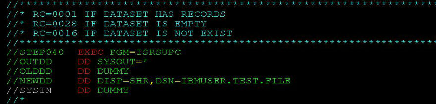

用PIC型中间变量解决Fixed赋值溢出abend
我在Debug一个PLI程序PRGM000的时候遇到了一个CEE34A abend，报的错误信息如下：
You were prompted because the CEE34A condition was raised in your
program.
CEE34A is a severity or class 3 condition.
The operating system has generated the following message:
CEE3210S The system detected a decimal-overflow exception (System
Completion Code=0CA).
The current location is PRGM000 ...
comments
Read More
利用SRCHFOR在PDS中搜索字符串
之前的文章说到了一个叫Mem xxx 的命令可以用来在一系列PDS中搜索一个名字叫做xxx的member，今天我来说下如何在一个PDS里面所有的member内容当中搜索特定字符串。其实就是利用search-for 的应用程序，比较常规的方法是道ISPF的3.14菜单里面搜索，如下图所示，就是在 "IBMUSER.PROJ.TEST.JCL"这个PDS里面所有的member内容中，搜索一个叫"STRING"的字符串：

当然，如果你想直接在当前PDS下调用search-for utility来搜索特定字符串，可以在command line上输入命令：
来在当前PDS下面搜索字符串”STRING“,具体如下面2张截图所示：


如果想同时在多个PDS当中搜索一个字符串，或者多个字符串那么该如何做呢？这时你可能就需要用到JCL来调用ISRSUPC这个utility了。这个ISRSUPC的功能可强大多了，具体可以参照下我之前的文章: <<用ISRSUPC在PDS所有member中搜索指定字符串>>，这里不重复了。
comments
Read More
Job(JCL)返回码
提交JCL最常见的返回码就是0、4、8、12、16，当然还有ABEND。
CC=0 作业正确执行(Executed Successfully)
CC=4 警告 一般不影响作业执行 (Executed Successfully but with warnings)
CC=8 作业可以执行，但执行的不完整 (Error)
CC=12 作业不能执行 (Serious Error)
CC=16 严重错误，中断后续命令的执行(Fatal Error)
ABEND 作业异常终止
下面是一些常见的JCL ABEND CODES
S0C4 Protection Abend.Caused by the subscript ...
comments
Read More
利用IBM File Manager查看COPYBOOK
这篇文章就来说下在大机上如何利用IBM File Manager来查看copybook的结构，特别是每个字段的起始位置。
1.在Command栏输入0;5;1 设置自动检测语言
这样，不论你的copybook是PLI的还是COBOL的，FileManager都能自动检测出来。


2.设置好之后，进入3；13 (Utility->Copybook)
这里填写copybook的路径和member名，member栏也可以不写:

接着就能查看copybook内容了，特别是查看某个字段起始位置的时候特别有用。

上面的MYPLICPY是PLI的copybook，COBOL的这里就不上图了，上图很累的。
comments
Read More
Changeman的Stage和Checkout
把一个component(比如程序PRGM001)弄到package里面去有两种方法：一是stage，二是checkout。
Stage
所谓的stage就是当生产环境上面没有的，而你要将一个新的component弄到生产上面去的时候用stage。比如生产环境上面没有PRGM001这个程序，如果你最终想把这个程序通过Changeman安装到生产环境，那你就得现在自己的PDS下面建一个名为PRGM001的程序：
然后stage到changeman里面去，具体做法是在ISPF输入:
输入你的Package ID,回车
在Package前面输入命令：

Checkout
和stage不同，checkout是针对那些已经存在于生产环境里面的components。它们是有版本之分的，比如你要Checkout一个现在已经存在于生产环境的PRGM002,在Package前面输入命令

这里注意一下SOURCE LIBRARY.
SOURCE LIBRARY=0 说明checkout的是当前生产环境baseline里面的最新版本。
SOURCE LIBRARY=-1说明checkout的是比当前生产环境baseline旧的一个版本。
以此类推...
最后，在Package ID前面输入命令S2，查看package里面所有的components ...
comments
Read More
IBM大型机12月16日起支持Windows系统[转载]
本文来源——http://www.sina.com.cn 2011年11月07日 15:58 新浪科技微博
新浪科技讯 北京时间11月7日下午消息，据美国IT网站ComputerWorld报道，IBM大型机将从今年12月中旬开始支持Windows系统。
IBM此前就有意在zEnterprise 196大型机中采用Windows系统。根据IBM发布的最新消息，该公司大型机将从今年12月16日起支持Windows管理功能。用户一直希望数据中心有新的功能。当前，有许多基于Windows的应用可支持大型机获取数据，其中就包括IBM制造的许多应用。但此类应用现在必须单独管理。
IBM表示，支持Windows系统将有助于提高大型机企业环境的安全性和速度，同时让用户可以在私人网络上连接系统，避免其他网络问题，实现一体化管理。IBM System z部门业务主管格雷格·洛特科(Greg Lotko)说：“之所以增加对Windows系统的支持，是因为IBM真正认识到这个世界的复杂性。”
洛特科补充说，从今往后，IBM System z平台可以支持z /OS、Linux、Unix 和Windows等多套系统 ...
comments
Read More
COBOL编码规则
苦逼的COBOL们一定知道和JCL一样，在写COBOL程序的时候对源码的区域也有一定的制约的，具体如下表所示：

第7列用来说明程序所在行的用途:
连接符(-): 表示本行是上一行的续行；
('D'): 表示查错；
星号('*'): 表示注解；
下面的COBOL程序元素必须从A区域开始：
部(DIVISION)和节(SECTION)的标题
段名
程序结尾(End Program)标题
级别标示符如FD或者SD等，级别号如01级和77级
下面这些COBOL元素必须从B区域开始：
语句、句子和短语继续行
[注：本文内容源自：《IBM主机技术一本通》]
comments
Read More
COBOL程序典型结构
一个典型的COBOL程序结构是：程序由许多‘部’组成，每个‘部’可以包含多个‘节’
COBOL PROGRAM (程序)
DIVISION(部)
SECTION(节)
PARAGRAPH(段)
SENTENCE(句子)
STATEMENT(语句)
整个COBOL程序由4个'部'(DIVISION)组成：
Identification Division 标识部
Environment Division 环境部
Data Division 数据部
Procedure Division 过程部
用一句话介绍这四个部：标志部提供作者和编译器信息；环境部提供程序运行的环境；数据部描述程序处理的绝大部分数据；过程部描述对数据部描述的数据的操作算法:
Identification Division(标识部)--主要是程序和作者名
IDENTIFICATION DIVISION.
PROGRAM-ID ...
comments
Read More
提交JCL的4种方式
总结了下在主机上面提交JCL的四种方式：
1.用VIEW或者EDIT打开JOB,在命令行上输入SUBMIT或者SUB:

2.直接在JOB前面输入SUBMIT或者SUB，不用打开:

3.命令行模式下输入命令:

4.Q;ST进入SDSF，找到你最近run过的JOB，在它前面输入SJ，回车，输入SUB,提交job。
comments
Read More
utility判断dataset是否为空的方法
下面介绍四种利用Utility的返回码来判断一个dataset或者member是否为空文件的方法：
1.利用IDCAMS

2.利用SORT(DFSORT/SYNCSORT)

3.利用ICETOOL(SYNCTOOL)

4.利用ISRSUPC

方法不止以上四种，还有利用REXX脚本也可以判断，只是不属于本文讨论的范围。
comments
Read More